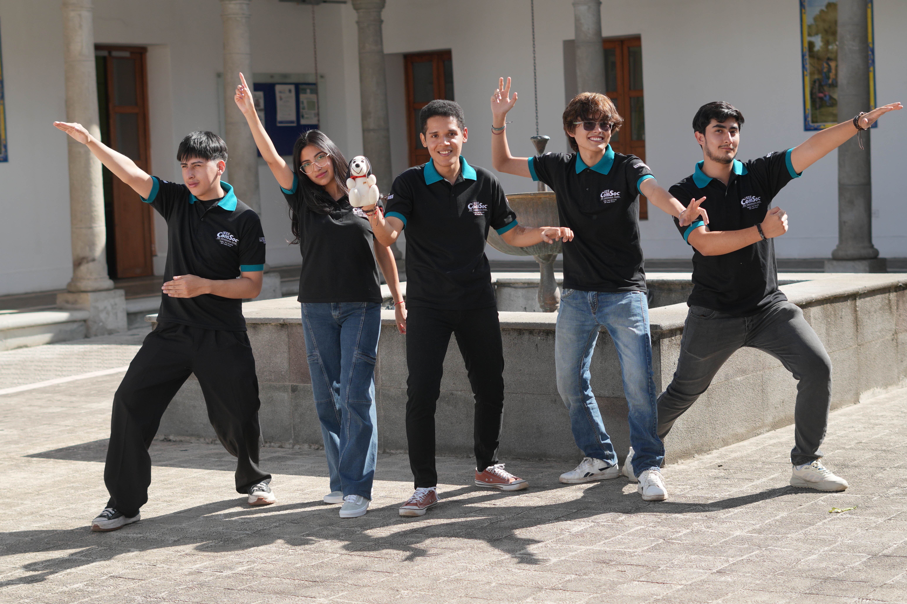

I'm part of the directive of IEEE ComSoc Yachay Tech Student Branch, currently serving as webmaster.
- Posting about ComSoc in social media
- Designing social media graphics for events
- Writing copy for outreach and announcements
Learn more: IEEE ComSoc official site (opens in a new tab)